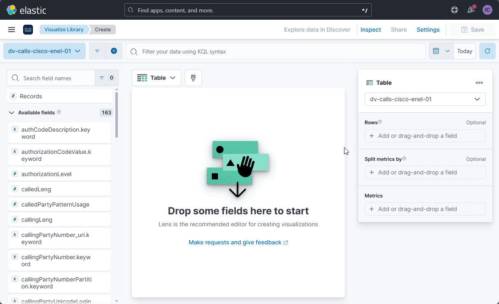

Paso 1: Ingresa al Dashboard
- Abre el dashboard en el que deseas incluir tu tabla. Si aún no tienes un dashboard creado, configura uno nuevo desde la opción "Dashboard" en el menú lateral.
Paso 2: Inicia la Creación de la Visualización
- Haz clic en el botón "Create visualization". Esto abrirá una ventana donde podrás elegir el tipo de visualización.
- Selecciona el Data View que contiene los datos que deseas mostrar. Este paso es importante para definir la fuente de datos que alimentará tu tabla.
Paso 3: Selecciona el Tipo de Visualización
- Elige "Table" como el tipo de visualización. Esto mostrará los datos en formato de tabla.
Paso 4: Asigna los Campos de la Tabla
Rows (Filas): Esta sección te permite agregar los campos para agrupar los datos. Por ejemplo, si añades un solo campo, se generará un listado de valores únicos, y si agregas varios, Kibana agrupará automáticamente los datos por la combinación de esos valores.
Metrics (Métricas): Aquí debes colocar los campos cuyo valor cambiará dependiendo del análisis, como la suma, el promedio o el conteo de registros relacionados con las filas seleccionadas.
Nota Importante: Cuantos más campos añadas en Rows, más específica será la agrupación, lo que podría generar filas con pocos datos si los campos son muy detallados.
Opciones y Configuraciones en Rows y Metrics en Kibana
Rows (Filas)
- Data Functions: Agrupa los datos por funciones como Date Histogram, Filters, o Top Values.
- Fields: Selecciona campos clave para agrupar los datos.
- Rank By: Clasifica las filas según un campo numérico.
Metrics (Métricas)
- Quick Function: Funciones predefinidas como Average, Count, o Sum.
- Formula: Permite escribir fórmulas personalizadas.
Paso 5: Ejemplo de Creación de Tabla de "Llamadas por Usuarios"
- Rows: Se añade el campo
callUserName.keywordpara agrupar por usuario. - Metrics: Se añade el campo
recordspara mostrar el número total de llamadas.
Paso 6: Guarda y Visualiza
- Cuando termines de configurar la tabla, guarda los cambios seleccionando Save and return.
- Puedes ajustar la tabla para que las columnas se visualicen correctamente.